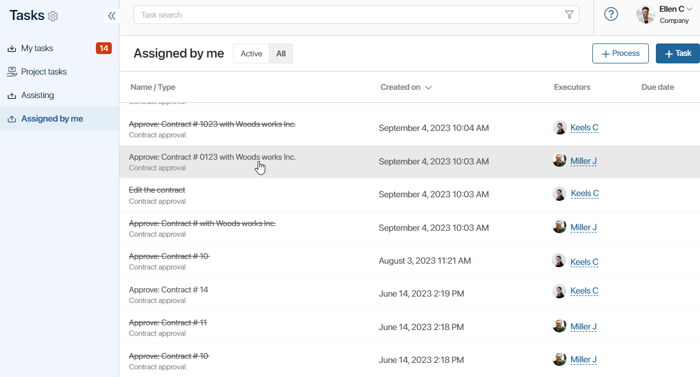
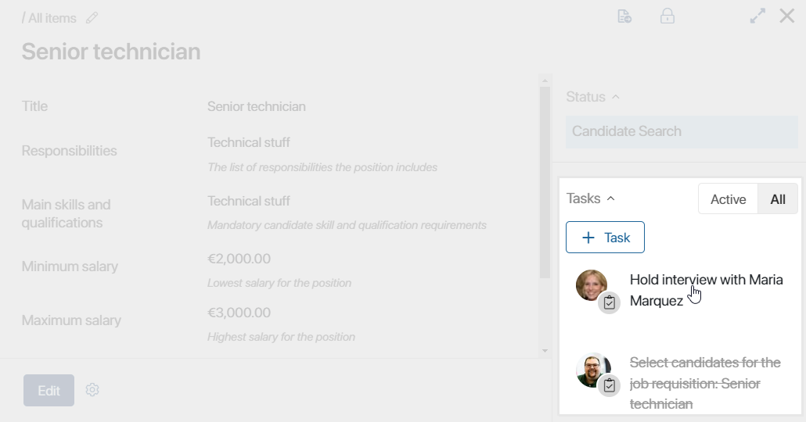
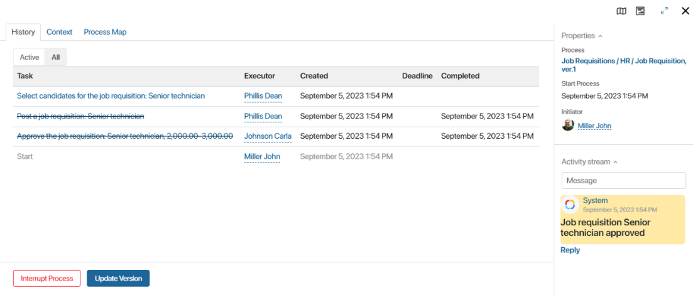
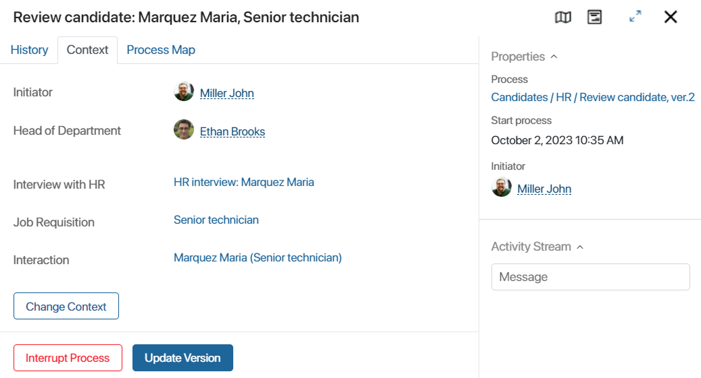
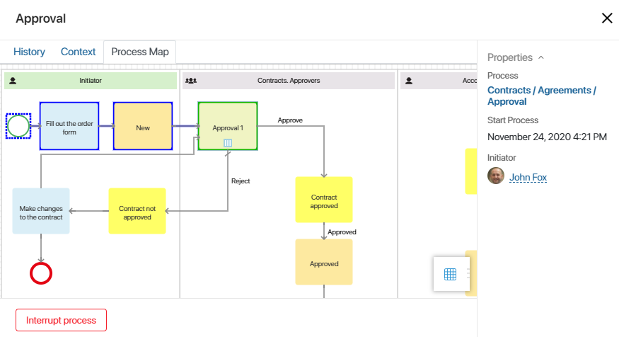
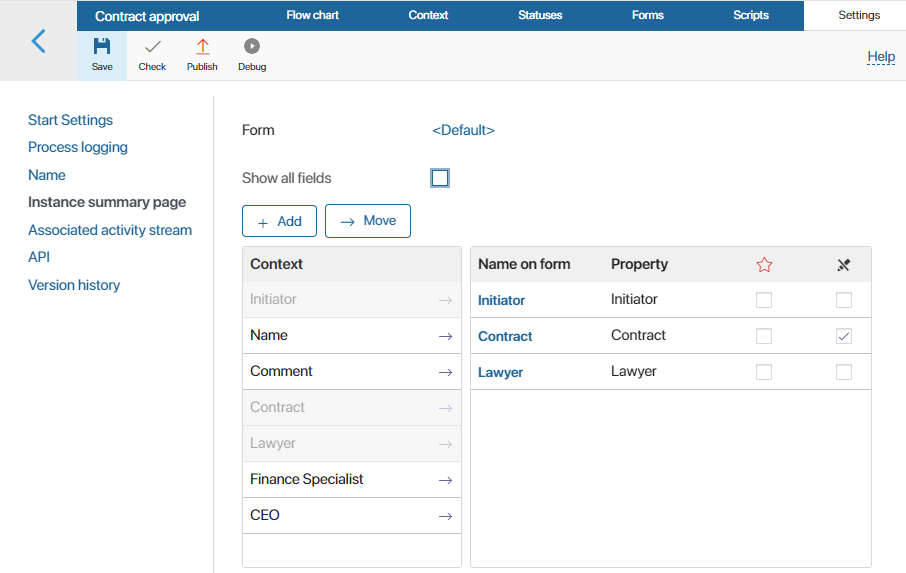

Instance summary page keeps you updated about the progress of the process and shows who the tasks are assigned to. Here you can find the instance start and end dates, the process version, the initiator's name, etc. If necessary, you can interrupt the execution of the instance. Administrators can also update the instance to the most recent published version of the process.
For more information about actions with instances available to users depending on their roles, see Access to tasks and process instances.
Open process instance page
By default, all the users of the system have permissions to view the instance summary page.
The process initiator can open it by going to Tasks > Assigned by me. This page lists all the tasks assigned by this person. The instance name is written in black, and the process name is written in gray. If the name is crossed out, it means that the instance has been completed or interrupted.
Click on the name of an instance to open the instance summary page.

Other users can open the summary page if they are sent a link. Also, if the user has access to view items of the app where the process was launched, they can open the summary page right from the item's page by clicking on the name of the task in the right panel.

The process summary page has three tabs: History, Context, and Process Map.
History tab
The History tab displays all tasks assigned during the process, as well as information about their performers, deadlines, start and end dates. The panel on the right-hand side shows the process name, the start date, initiator and the process activity stream.
If an associated subprocess is configured to start during a process, its name will be displayed in the history. By clicking on it, you can open the instance summary page of the child or parent process.

The creator of the task, if given process management rights in app access settings, can open any task page and reassign the task from the current executor to another user.
If necessary, you can send a message to the task performer directly from the instance summary page. To do that, click on the name of the performer and select Send message in the window that opens.
The activity stream of the instance summary page also shows messages sent by users within process tasks.
Note that the task pages and the instance summary page can display both the process activity stream and the app item or file activity stream. This depends on the activity stream settings in the process designer.
On this tab, you can also interrupt the process, update it, and handle the errors that may have appeared in certain activities.
Handling errors
On the History tab you can handle the errors that may appear in a process.
- If an error appears at any step of the process, it is added to the list on the summary page. To resolve, click on the error and select the appropriate action:
- Repeat step. You manually force the step to be executed again, for example, if the error occurred because an external service was temporarily unavailable. This option does not replace but rather complements the process element's settings for error handling.
- Skip. You can skip the step where the error appeared, for example, if the script used on this step has changed and can no longer be executed.
- Interrupt Process. This button is available at the bottom of the page on any tab. It is displayed for the initiator of a process and users with process management rights. Use this button to manually stop process execution if the process is no longer required or the error cannot be resolved.
- Update Version. This button is available to system administrators and can be accessed at the bottom of the page, no matted which tab is open. It allows applying any recent updates to a running process instance. Let’s say an instance was launched in the morning, but at lunchtime a new version of the process was published including important updates. To apply these updates to the instance that was launched in the morning, use the Update Version button.
Context tab
By default, all process context variables and their values are displayed on the Context tab. This is especially useful if you need to get information about several parameters of an instance since all the data is shown on one tab.

If a context variable refers to a file or an app, you can open it directly from the summary page in the preview mode.
If necessary, you can hide certain context variables. This can be done in the designer. Read more about how to add or hide variables in the Settings tab article.
At the bottom of the page, the Edit Context button is available. It allows changing the values of fields in a running process instance. Let's say you published a new process version with several new variables. If you update the running instance, these variables will remain empty. Use the Edit Context button to fill them in manually.
Process Map tab
Process Map is a process diagram that shows task progress in real time.To open it, go to the Process Map tab or click the icon on the upper panel.

The map helps you track which tasks have been completed and which ones are coming up next.
- Completed tasks and connectors are outlined blue.
- Operations that are in progress are outlined green.
Trace business process scripts
If tracing is enabled for a process in Administration > Developer Tools, the system administrator can analyze the execution of its scripts. This helps you estimate the duration of individual requests, optimize the code, and identify the causes of errors. To view the list of traces, in the upper right corner of the instance page, click the icon.
For more information about trace configuration and information on the trace page, see the Trace server scripts article.
Summary page layout
You can modify the layout of the instance summary page depending on your needs. You can hide or add tabs, change the right panel, add information blocks to the main area, etc.
The layout of the page is edited on the Settings tab of the designer. To learn more, see Settings tab.

Found a typo? Select it and press Ctrl+Enter to send us feedback